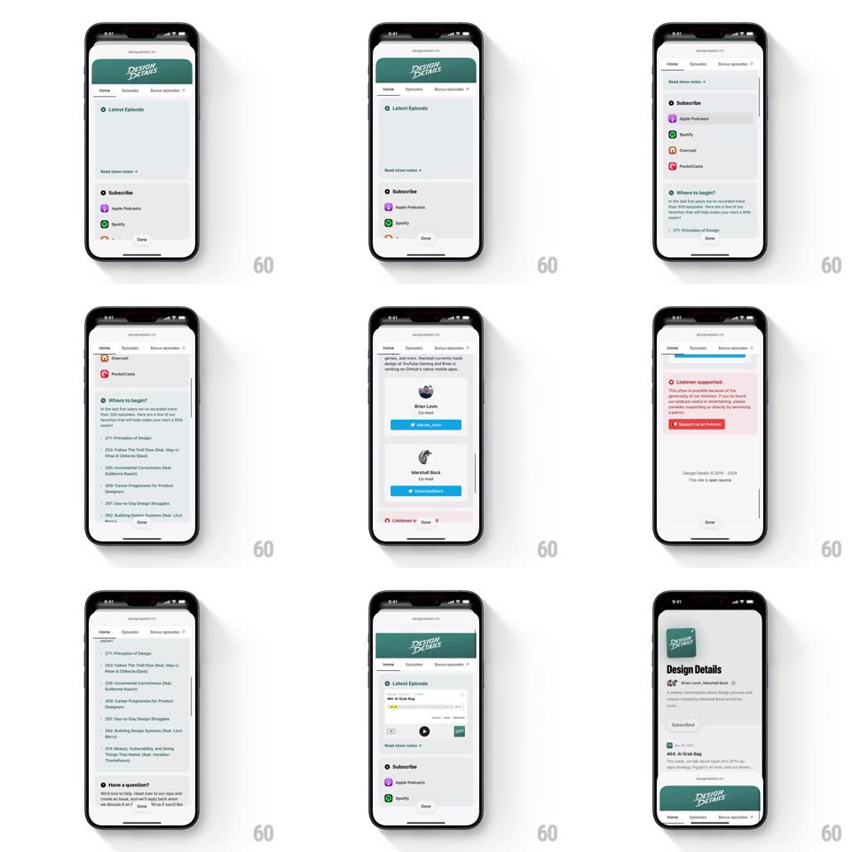

Media
Frame-by-frame

Rebuild this interaction 1:1: Queue's podcast detail web sheet - a bottom sheet web view of the show's site with a sticky green header, Home/Episodes/Bonus episodes tabs that swap content, smooth scrolling through episodes, subscribe options, and host cards, and a slide-down dismissal.

Rebuild this interaction 1:1: Queue's podcast detail web sheet - a bottom sheet web view of the show's site with a sticky green header, Home/Episodes/Bonus episodes tabs that swap content, smooth scrolling through episodes, subscribe options, and host cards, and a slide-down dismissal.
## Integration
Integration: stack-agnostic spec - springs given as stiffness/damping, timed motions as duration + curve; map every value to your framework and animation library of choice.
## Scene
The sheet holds the Design Details site: green banner header ("DESIGN DETAILS" script logo), tab bar (Home / Episodes / Bonus episodes), then content - "Latest Episode" with a play row, "Subscribe" list (Apple Podcasts, Spotify, Overcast, PocketCasts), "Where to begin?" episode links, host cards (Marshall Bock, Brian Lovin, each with a follow button), a red "Listener supported" Patreon block, and a Done button pinned at the bottom.
## Motion spec
Pattern: sticky-header web sheet with tab transitions and drag-to-dismiss.
- The sheet rises to near-full height (spring ~320/26, 380ms) leaving a sliver of the dimmed app at top.
- Scroll: content scrolls under the sticky green header; the tab bar pins just beneath it after the banner scrolls past.
- Tab switch: the outgoing content fades + slides left 24px (180ms, ease-in) as the new tab's content fades + slides in from the right (220ms, ease-out); the active tab underline slides to the new position (200ms).
- Drag the header/grabber down: the sheet follows the finger 1:1; past 30% drag it dismisses (slide down 300ms, ease-in), otherwise springs back (spring ~380/24).
- The Done button also dismisses with the same slide.
## Calibration
- Tab underline movement is a single slide - no fade of the underline itself.
- Dismissal velocity inherits the fling - a fast flick closes immediately.
## Reduced motion
Tabs crossfade; dismissal is a fade-down.
## Don't miss
- The status bar area stays dark/dimmed - the sheet never claims the very top.
- The host cards' blue follow buttons and the red Patreon block are the only saturated accents on the white page.